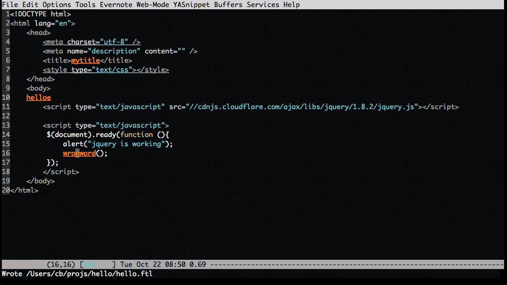

How to use flyspell in web-mode
Insert below code into your ~/.emacs and you are good to go:
(defun web-mode-flyspefll-verify ()
(let ((f (get-text-property (- (point) 1) 'face)))
(not (memq f '(web-mode-html-attr-value-face
web-mode-html-tag-face
web-mode-html-attr-name-face
web-mode-doctype-face
web-mode-keyword-face
web-mode-function-name-face
web-mode-variable-name-face
web-mode-css-property-name-face
web-mode-css-selector-face
web-mode-css-color-face
web-mode-type-face
)
))))
(put 'web-mode 'flyspell-mode-predicate 'web-mode-flyspefll-verify)
(add-hook 'web-mode-hook
(lambda ()
(flyspell-mode 1)
))
Screen shot: 
How to use git effectively
To take the full power of git, you need forget GUI and use CLI only. A little knowledge of script language like Bash/Perl/Python may be helpful.
Here is an example how I use git.
Problem
I'm working for a big enterprise project which uses git as version control software. My daily routine is find what files I changed. So I often use git commands with "–stat" paramters.
git show --stat git diff --cached --stat git log --stat git diff --stat
Since I use CLI git in bash shell only. I set alias for these commands in bash. For example, I need only type gds in bash instead of "git diff –stat".
Git commands with "–stat" option usually only display relative paths, so I write some bash function which enable me select that relative path interactively (without using mouse, of course), convert that path to absolute path, and copy that absolute path into clipboard.
Getting full path into clipboard is useful because in big projects I need do lots of communication with managers and colleagues. For example, I need list files I changed in our bug tracking system (JIRA) and also email them by using Outlook. If you still don't understand why it's hard in big project, let me give you some hint. Big project is usually a big shit. Say you will edit file A, you will find another 10 files distributed in different location with same file name and similar code. Those another 10 files are not your business and if you dare touch them, you need deal with another 10 managers from ten teams.
Set up
Now you understand the problme. Here comes the solution.
Step 1, You need install percol by sudo pip install percol. Percol will provide some interactive UI to help you select the line in shell.
Step 2, install xsel or xclip under Linux to support paste text into X clipboard. BTW, you did install some clipboard manager under Linux, didn't you?
Step 3, insert below code into your ~/.bash:
# search the file and pop up dialog, then put the full path in clipboard
function pclip() {
if [ $OS_NAME == CYGWIN ]; then
putclip $@;
elif [ $OS_NAME == Darwin ]; then
pbcopy $@;
else
if [ -x /usr/bin/xsel ]; then
xsel -ib $@;
else
if [ -x /usr/bin/xclip ]; then
xclip -selection c $@;
else
echo "Neither xsel or xclip is installed!"
fi
fi
fi
}
function glsf () {
local str=`git --no-pager log --oneline --decorate --stat $* |percol`
if [[ $str =~ ^[[:space:]]*([a-z0-9A-Z_.\/-]*).*$ ]]; then
echo -n ${BASH_REMATCH[1]} |pclip;
echo ${BASH_REMATCH[1]}
fi
}
function ff()
{
# @see http://stackoverflow.com/questions/13373249/extract-substring-using-regexp-in-plain-bash
local fullpath=$*
local filename=${fullpath##*/}
local filter=${fullpath##*./}
# only the filename without path is needed
# filename should be reasonable
local cli=`find $PWD -type f -iname '*'${filename}'*'|grep ${filter}|percol`
echo ${cli}
echo -n ${cli} |pclip;
}
Usage
glsf ff line-from-clipboard # now I can paste the full path into firefox, outlook ...
Here is the screen cast: 
三文鱼炖豆腐做法
用料: 三文鱼、老豆腐、面粉、黑胡椒粒、甜椒、葱、大蒜、姜、松子、香菜、盐、老抽、生抽、糖。
做法：
1: 三文鱼去掉鱼骨，拔出鱼刺，和豆腐切成大小相仿的小块，
并用厨房纸巾稍稍擦干水份，三文鱼块里撒入适量的黑胡椒粒，
放入2勺面粉稍微裹以下;
鱼炖豆腐好吃2字诀-三文鱼炖豆腐
2: 其他材料备好;
鱼炖豆腐好吃2字诀-三文鱼炖豆腐
3: 锅底用姜片擦一遍，放入姜片、三文鱼2面煎黄取出，
再放入豆腐块煎黄;
鱼炖豆腐好吃2字诀-三文鱼炖豆腐
4: 倒入适量老抽上色，生抽、盐、糖、大蒜调味，
一次性倒入足量的开水，大火煮开，中火炖至快干;
鱼炖豆腐好吃2字诀-三文鱼炖豆腐
5: 放入甜椒块翻炒一下，撒入松子、香菜段即可起锅。
鱼炖豆腐好吃2字诀-三文鱼炖豆腐
小牛贴心提示：
1：炖豆腐和鱼，想要好吃，关键要时间，
即是老话所说"千滚的豆腐万滚的鱼";
2：鱼块裹面粉、生姜擦锅都能防止鱼不沾锅;
3：一次性加入足量的开水，中途不要频繁加水。
- 生抽至少两大勺,我放得太少
- 炖得时候我放水太少,一开始就要多放,至少半大碗水
- 鱼和豆腐煎的黄一点,一开始用纸吸干水份较好,否则油到处溅
- 老抽没有了,所以颜色很难看
- 诀窍1,黑胡椒之类的辛香料都是油炸过后才更香
- 诀窍2,如果做汤的话,鱼和豆腐炖的时间越长越好吃,也有营养
另附有三文鱼豆腐汤的做法
Copy file name or full path of file from Emacs dired buffer into system clipboard
Simple, insert below code into your ~/.emacs:
;; {{ copy the file-name/full-path in dired buffer into clipboard
;; `w` => copy file name
;; `C-u 0 w` => copy full path
(defadvice dired-copy-filename-as-kill (after dired-filename-to-clipboard activate)
(with-temp-buffer
(insert (current-kill 0))
(shell-command-on-region (point-min) (point-max)
(cond
((eq system-type 'cygwin) "putclip")
((eq system-type 'darwin) "pbcopy")
(t "xsel -ib")
)))
(message "%s => clipboard" (current-kill 0))
)
It support Cygwin and OSX out of the box. You need install xsel under Linux.
BTW, I suggest installing a clipboard manager like parcellite under Linux to sync the two X clipboards.
番茄鸡蛋汤做法
- 放蒜(可以加姜,葱)大火爆炒,也可以加点老抽
- 放入番茄超出茄红素
- 加水煮,调味放盐糖
- 最后放入打碎鸡蛋,五秒钟后起锅
有人介绍下面也是类似原理,加葱花老抽爆炒,然后放水煮面
Matthew Keeler video tutorial on org-mode in Emacs
At 4:57 it becomes interesting.
One liner to load m3u into mpd
mpc clear;ln -s ~/Music/all.m3u ~/.mpd/playlists/all.m3u;mpc load all;mpc update;mpc shuffle;mpc play;
Toggle full view of window in Emacs
Add below code into your ~/.emacs:
(defun toggle-full-window()
"Toggle the full view of selected window"
(interactive)
;; @see http://www.gnu.org/software/emacs/manual/html_node/elisp/Splitting-Windows.html
(if (window-parent)
(delete-other-windows)
(winner-undo)
))
I use evil, so I assign hot key ",ff" to toggle-full-window.
The minimum packages to install for front end development on Linux
sudo apt-get install ack git emacs24-nox feh i3 xsel ctags vim scrot xbindkeys dunst unclutter parcellite gimp